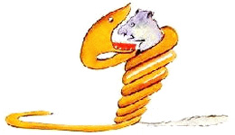
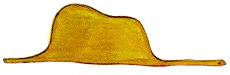
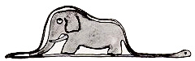

Когда мне было шесть лет, в книге под названием "Правдивые истории", где рассказывалось про девственные леса, я увидел однажды удивительную картинку. На картинке огромная змея - удав - глотала хищного зверя. Вот как это было нарисовано:

В книге говорилось: "Удав заглатывает свою жертву целиком, не жуя. После этого он уже не может шевельнуться и спит полгода подряд, пока не переварит пищу".
Я много раздумывал о полной приключений жизни джунглей и тоже нарисовал цветным карандашом свою первую картинку. Это был мой рисунок № 1. Вот что я нарисовал:

Я показал мое творение взрослым и спросил, не страшно ли им.
- Разве шляпа страшная? - возразили мне. А это была совсем не шляпа. Это был удав, который проглотил слона. Тогда я нарисовал удава изнутри, чтобы взрослым было понятнее. Им ведь всегда нужно все объяснять. Вот мой рисунок № 2:

Взрослые посоветовали мне не рисовать змей ни снаружи, ни изнутри, а побольше интересоваться географией, историей, арифметикой и правописанием. Вот как случилось, что с шести лет я отказался от блестящей карьеры художника. Потерпев неудачу с рисунками № 1 и № 2, я утратил веру в себя. Взрослые никогда ничего не понимают сами, а для детей очень утомительно без конца им все объяснять и растолковывать.
Итак, мне пришлось выбирать другую профессию, и я выучился на летчика. Облетел я чуть ли не весь свет. И география, по правде сказать, мне очень пригодилась. Я умел с первого взгляда отличить Китай от Аризоны. Это очень полезно, если ночью собьешься с пути.
На своем веку я много встречал разных серьезных людей. Я долго жил среди взрослых. Я видел их совсем близко. И от этого, признаться, не стал думать о них лучше.
Когда я встречал взрослого, который казался мне разумней и понятливей других, я показывал ему свой рисунок № 1 - я его сохранил и всегда носил с собой. Я хотел знать, вправду ли этот человек что-то понимает. Но все они отвечали мне: "Это шляпа". И я уже не говорил с ними ни об удавах, ни о джунглях, ни о звездах. Я применялся к их понятиям. Я говорил с ними об игре в бридж и гольф, о политике и о галстуках. И взрослые были очень довольны, что познакомились с таким здравомыслящим человеком.